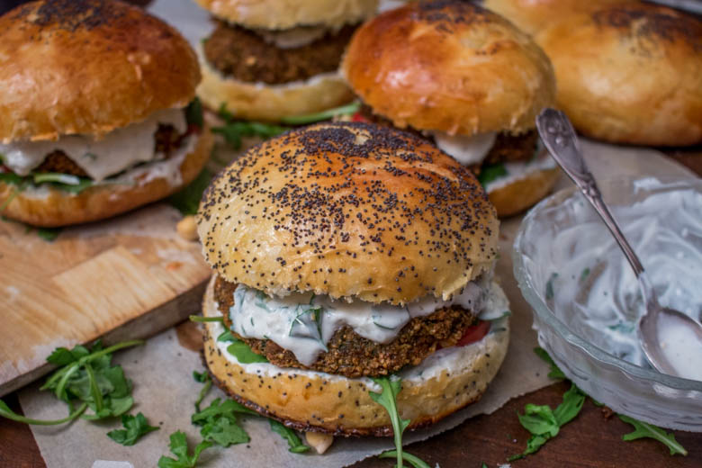
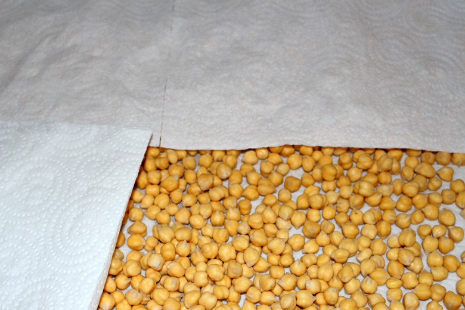
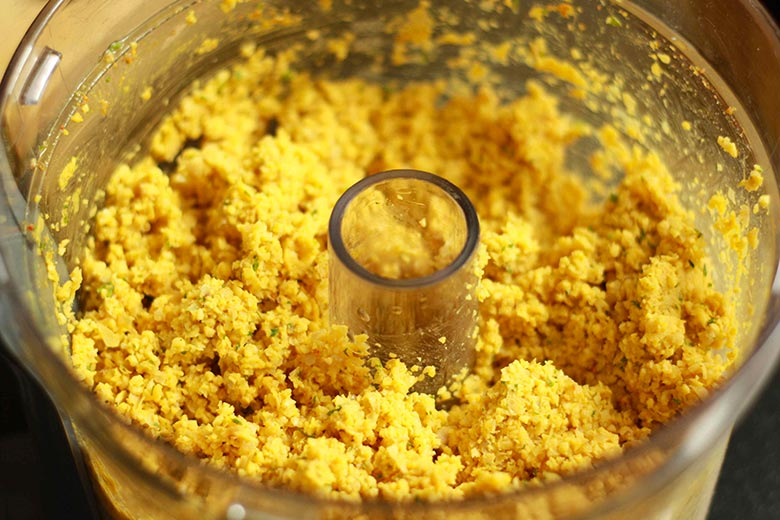

Falafels Homemade et sa sauce au yaourt
Aujourd’hui on se retrouve pour une spécialité culinaire très populaire au Proche-Orient: les Falafels

Parlons un peu de cette petite boulette aux parfums d’ailleurs qui fait de plus en plus fureur chez nous !
Je ne parlerai pas de l’origine des falafels car c’est encore une zone d’ombre et vous pouvez d’ailleurs les trouver sous l’appellation Tamiya notamment en Égypte… La seule chose que je peux vous dire c’est que moi j’ai découvert les falafels dans un restaurant libanais puis évidemment lors de mon voyage à Jérusalem ! Ce que j’en dit c’est que c’est petites boulettes deviennent très rapidement « addictives » !
Les falafels font partis du quotidien alimentaire d’une grande partie du Proche-Orient. Quand chez nous on se « goinfre » de fastfoods et autre « malbouffe » en tous genres, eux dévorent de délicieux sandwichs de falafels (même le macdo de Jérusalem nous propose le Mc Falafel comme s’il pouvait égaler le « vrai » sandwich de falafels du coin…) !
Vous trouverez des falafels aux fèves, aux pois chiches ou encore un mix des deux. Agrémentés d’épices puis frites dans l’huile ces boulettes sont servies en mezzé avec une sauce au yaourt, tahini ou encore dans un bon pain pita dans lequel est ajouté du houmous, du tahini, une salade et pleins d’autres bonnes choses…
Ma recette de falafels est une recette de falafels aux pois chiches. Très légèrement croquants à l’extérieur mais bien moelleux à l’intérieur j’ai décidé de les servir avec une sauce au yaourt dans un bon pain pita.

Informations sur la recette
- Temps de préparation : 30 minutes
- Temps de cuisson : 8-10 minutes
- Quantité : une trentaine de falafels
Les ingrédients
Pour les falafels
- Pois chiches secs - 500 g
- Ail - 4 gousses
- Persil frais - 1/2 bouquet
- Coriandre fraîche - 1/2 bouquet
- Oignon - 1
- Coriandre en poudre - 2 càc
- Cumin en poudre - 2 càc
- Cardamone en poudre - 1 càc
- Bicarbonate de sodium - 1 càc
- Sel - 1 pincée
- Huile pour friture
Pour la sauce au yaourt
- Yaourt grec - 225g
- Ail - 1 gousse
- Cumin - 1 càc
- Persil frais - quelques feuilles
- Poivre blanc - 1 càc
- Citron - 1/2
Préparation d'une sauce au yaourt express :
- Dans un bol verser le yaourt.
- Ajouter le jus d'un demi citron.
- Ciseler le persil et écraser la gousse d'ail puis les ajouter à la sauce.
- Incorporer les épices.
- Bien mélanger.
- Réserver au frais pendant la cuisson des falafels
La préparation des falafels
Il est impératif d'utiliser des pois chiches secs sinon vos falafels ne tiendront pas à la cuisson !
-
Un jour avant votre repas
Laisser tremper les pois chiches au moins toute une nuit dans deux fois leur volume en eau froide.

-
Le lendemain
Égoutter les pois chiches et les laisser sécher (au moins deux heures) entre deux feuilles de papier absorbant (c'est très très important qu'ils soient bien secs !)

-
Hacher très finement l'oignon, l'ail, le persil et la coriandre fraîche. Si vous nettoyez les herbes fraîches, faites les correctement sécher.
-
Incorporer les herbes hachées aux pois chiches.
-
Mélanger. Normalement vous devez constater que votre préparation s’agglomère facilement
-
Former des boules de la taille de votre choix et bien serrer car elles ont tendance à s’émietter (j'en ai fait 30 de tailles moyennes). Vous pouvez les parsemer de sésames dorés avant de les faire frire mais pour cette fois je ne l'ai pas fait!
-
Mettre de l'huile de friture dans une casserole et laisser la chauffer.
-
Une fois l'huile chaude, faire frire les falafels pendant 4 min environ. Si les boules formées se délitent à la cuisson c'est que vous n'avez pas bien fait sécher les herbes ou les pois chiches (ou que vous avez acheté des pois chiches en boîte).
-
Sortir les falafels de l'huile à l'aide d'un écumoire et égouttez les dans une assiette avec du papier absorbant.
-
Servez immédiatement !